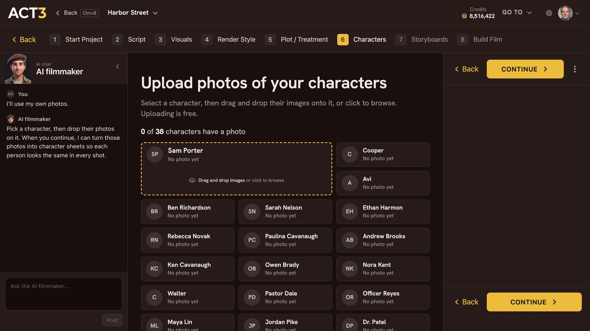

Step 4 of 8
Upload a headshot
Select your new character, then drop a headshot on the dashed box, or click to browse. The photo lands on that character. Click Continue.

The dashed box is the drop zone for the selected character. Hover a photo to preview it on the right.
What makes a good headshot
ACT 3 AI builds the whole character from this photo, so give it a clean one:
- Head and shoulders, looking at the camera, face fully visible.
- Even, soft light: no hard shadow across the face, no sunglasses, no hat hiding the hairline.
- One person in the picture, sharp, not a tiny face in a group shot.
- A JPEG or PNG straight from the camera or the actor's agent is fine. More photos of the same person (a profile, a full-body shot) help, but one good headshot is enough.
How the page works
- Select the character. The selected one grows and gets a dashed yellow edge; the whole box is the drop zone.
- Drop the photo on it, or click the box to browse your files. The photo appears inside the box and the count reads 1 photo.
- Check it: hover the photo to preview it large in the right bar. Remove takes it off again.
- Click CONTINUE ›.
Your decision: approve the credits
Uploading costs nothing. Turning the photo into a five-view character sheet does. CONTINUE shows the price before anything runs, and you approve it, or go back. A character whose sheet was already made from the same photos is never charged again.
Why you go next to the render
Once you approve, ACT 3 AI draws the sheet. Step 5 shows what that looks like while it works.